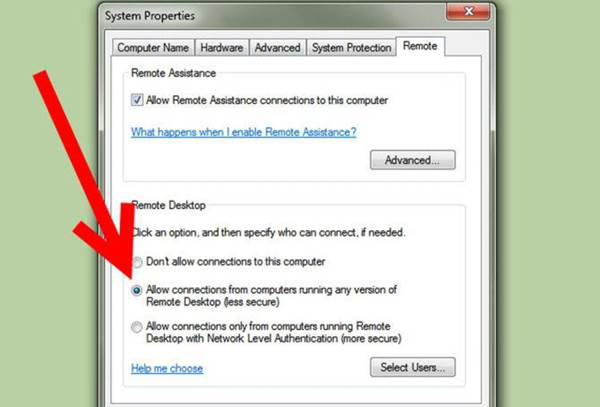
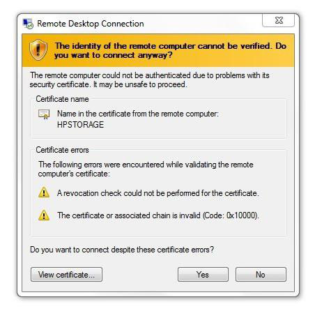
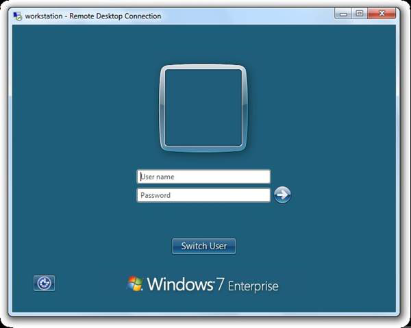
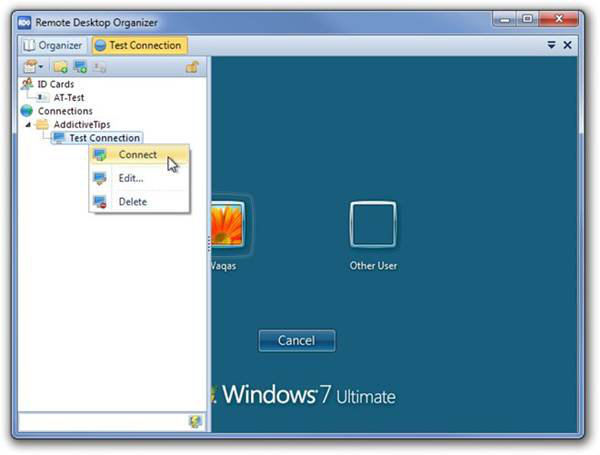
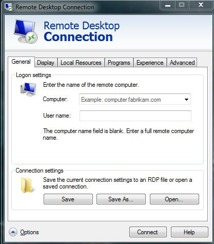
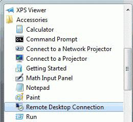

fb.ru
Удаленный рабочий стол Windows 7. Как включить и настроить удаленный рабочий стол Windows 7?
Настройка доступа
Теперь посмотрим, что нужно для того, чтобы провести настройку и успешно осущетвлять доступ к функции "удаленный рабочий стол Windows 7". Команда программистов и системных администраторов не помешают. Несомненно, сама настройка не требует никаких особых знаний и навыков, но тем не менее если вы хотите добиться более детализированных настроек, вам не помешает заручиться помощью. Итак, приступим.
Заходите в свойства компьютера: "Пуск"-"Компьютер"-клик правой кнопкой мыши-"Свойства". Теперь нажмите на "Настройка удаленного доступа". Теперь в разделе "Удаленный рабочий стол" выберите необходимый пункт - второй или третий, по аналогии с первым методом включения и настройки "стола". Далее выбирайте пользователей, которым хотите разрешить доступ к вашему компьютеру. При необходимости добавьте новые "контакты" и подтвердите свои действия. Вот и все.
Преимущества
У любой программы и службы есть свои недостатки и преимущества. Мы уже говорили о том, зачем нужен удаленный рабочий стол. Теперь пришло время завести разговор и о том, что хорошего в подобном доступе.
Конечно же, если вам нужен быстрый доступ к своему компьютеру, удаленный рабочий стол действительно будет полезен. Главное преимущество - это доступ ко всем ресурсам и данным, которые хранятся на компьютере. Вы можете получать со своего "железного друга" необходимую информацию и даже изменять некоторые его настройки.
Другой весомый плюс относится к тем, кто не привык к одной рабочей области. Удаленные рабочие столы имеют поддержку работы с несколькими мониторами.
Честно говоря, удаленный рабочий стол имеет множество функций, которые сейчас можно увидеть, скажем, в Скайпе (там есть демонстрация рабочего стола). Таким образом, при помощи стандартных и нестандартных методов осуществления доступа можно, скажем, вместе с друзьями посмотреть один фильм или программу. В общем-то, возможностей можно придумать уйму. Главное, проявить фантазию.

Недостатки
Недостатков у удаленного доступа мало. Для начала - работает удаленный рабочий стол Windows 7 через интернет. Так что, если у вас низкая скорость соединения или он вовсе отсутствует (отключили на время или не проведен в принципе), то можете забыть о подобном виде подключения.
Еще один минус - это то, что компьютер, к которому возможен удаленный доступ, должен быть всегда включен и подключен к интернету. В принципе, он в какой-то мере выполняет роль сервера, к которому подсоединяются другие компьютеры.
Недостаток использования некоторых программ - постоянная нужда в смене настроек и получении новых паролей доступа. Как уже говорилось ранее, удаленный рабочий стол, который запускается при помощи программ, постоянно получает новый "пароль", который необходимо все время передавать пользователям для работы. В принципе, на этом все "плохие" стороны на этой ноте подошли к концу.
Итак, сегодня речь пойдет о том, что же такое удаленный рабочий стол Windows 7, как правильно осуществить его настойку и использование. Данная возможность вполне полезна, особенно тем, кто работает с компьютерами. Прежде чем "шаманить" над настройками и включением, давайте поговорим, зачем нужен такой "стол".

Для чего нужен?
Итак, зачем же нужен удаленный рабочий стол? По правде говоря, такая вещица очень полезна тем, кто, мягко говоря, любит одиночество и тишину и предпочитает работать дома или в личном офисе. С помощью такой программы можно получить доступ к любому компьютеру со всеми его ресурсами, который только подключен в локальную сеть. Таким образом, вы можете выполнять свою работу в любом месте, где есть доступ к интернету и локальная сеть.
Удаленный рабочий стол - основное место работы системных администраторов. Теперь достаточно просто позвонить ему и сказать о неполадке - работник быстро "подключится" к вам и исправит ошибку, не вставая из-за стола. Не нужно звать его, подолгу ждать и нервничать. Кроме того, удаленный рабочий стол может помочь вообще всем, кому может потребоваться доступ к своему, скажем, домашнему компьютеру и его данным. Как же можно включить его?
Программы
Несомненно, удаленный рабочий стол Windows 7 можно подключить и использовать посредством разных специализированных программ. Как правило, для того чтобы создать "локальную сеть", необходимо просто установить "прогу", запустить ее и дать пароль от вашего "компьютера", присвоенный программой, специально для доступа.
Удаленный рабочий стол Windows 7 легко подключается при помощи TeamViewer. Это программа, осуществляющая доступ к вашему компьютеру любому, у кого имеется пароль, присвоенный компьютеру посредством программы. Довольно удобный способ, если вам не очень хочется мудрить с настройками доступа.  Все, что вам нужно - программа и интернет-соединение. Правда, есть у такого подхода весомый минус - при каждом перезапуске программы вы будете получать новый пароль доступа. С точки зрения безопасности - подобного рода подход очень даже подходящий. А вот для пользователя удаленный рабочий стол Win 7, подключенный через TeamViewer, может быть несколько неудобным.
Все, что вам нужно - программа и интернет-соединение. Правда, есть у такого подхода весомый минус - при каждом перезапуске программы вы будете получать новый пароль доступа. С точки зрения безопасности - подобного рода подход очень даже подходящий. А вот для пользователя удаленный рабочий стол Win 7, подключенный через TeamViewer, может быть несколько неудобным.
Включаем системными средствами
Конечно же, можно создать, подключить и осуществить настройку, а далее входить в удаленный рабочий стол Windows 7 при помощи системных средств. Они имеются в каждой операционной системе новых поколений. Таким образом, если вам необходимо пользоваться "удаленкой", вы легко сможете сделать это, не прибегая к помощи сторонних программ. К сожалению, на старых "осях" отсутствует удаленный рабочий стол. Windows 7 home basic, professional, ultimate - во всех имеется необходимый контент. Сегодня мы заострим свое внимание на том, какие методы существуют для настройки и дальнейшего использования удаленного доступа к компьютеру без всякой помощи сторонних программ и приложений. Для начала надо разобраться, как включить удаленный рабочий стол Windows 7.
Стандартный метод

Всего существует два способа, которые мы и рассмотрим. Начнем с более "приземленного", под логичным названием "стандартный". Для него не нужно никаких особых знаний и навыков. Итак, чтобы подключить, скажем, удаленный рабочий стол Windows 7 home premium, вам нужно первым делом кликнуть по "Пуску", выбрать "Компьютер", нажать на него правой кнопкой мышки и нажать там "Свойства". В открывшемся списке слева выберите "Настройка удаленного доступа".
Далее в меню "Удаленный рабочий стол" вам предстоит выбрать один из трех пунктов. Первый вовсе запрещает доступ к данному компьютеру и по умолчанию "отключен". Различия между двумя следующими просты: второй служит для любых операционных систем, а третий - для "Висты" и выше. Все, что теперь остается сделать - выбрать и добавить необходимых пользователей для доступа.
Нестандартный метод
Есть и второй, нестандартный подход к подключению удаленного рабочего стола. Осуществляется он при помощи служб администрирования. Итак, приступаем. Первым делом зайдите в службы (через "Пуск", зайдя там в "Панель управления", после - в "Администрирование" и там уже - в "Службы"). Найдите там брандауэр Windows, включите его и поставьте автоматический запуск. Теперь необходимо попасть в локальную политику безопасности. Чтобы туда пройти, существует два способа: "Панель управления", снова заходите в "Администрирование" и на этот раз идите во вкладку "Локальная политика безопасности" или же введите через панель управления secpol.msc и выполните данную команду. Там нужно выбрать "Бранмауэр Windows в режиме повышенной безопасности-Объект локальной групповой политики-Правила для выходящих подключений". В правой части окна необходимо нажать ПКМ и "Создать правило". Следуйте всем указаниям. Тип протокола необходимо выбрать TCP, удаленный порт - все, локальный - 3389. Разрешите ip-адреса, далее отметьте те сети, от которых хотите принимать подключения и дайте имя новому правилу. Далее вам необходимо пробраться в редактор групповой политики ("Выполнить"-gpedit.msc). Далее проходите в конфигурацию компьютера. Найдите и зайдите там в административные шаблоны. Далее посетите компоненты Windows и службы удаленных рабочих столов. Теперь выберите "Узел сеансов рабочих стлов" и нажмите на "Подключения". Здесь вы можете сами выбрать, что именно вам необходимо для доступа. Обязательно нужно сделать:
- Разрешите удаленное подключение с использованием специальных служб удаленных рабочих столов.
- Установите правила удаленного управления над пользовательскими сеансами посредством удаленных спецслужб (необходимые параметры выбирайте сами).
Таким образом будет подключен удаленный рабочий стол Windows 7. Несколько пользователей смогут подключиться к вашему компьютеру. Но на этом дело не окончено. Удаленный доступ необходимо правильно настроить. Сделать это будет довольно несложно, если у вас есть хоть малейшее представление о компьютерах.
Что говорят люди

Но что думают пользователи о подобных доступах? Какими методами они его осуществляют? Давайте посмотрим!
Итак, по статистике можно заметить, что удаленным доступам доверяют небольшие массы людей. Понять пользователей можно - через интернет в наше информационное время возможно украсть абсолютно любые данные, даже так, чтобы владелец не был в курсе происходящего. Не очень-то приятно терять конфиденциальные и важные файлы.
Большей популярностью и доверием пользуются специализированные программы. Наверное, это потому что человек может в любой момент "перекрыть кислород" тому, кто лицезреет его компьютер - попросту выключить программу.
Если речь идет об офисах, то подобного рода доступ очень удобен. Легкое подключение сокращает время работы, что позволяет вовремя и в срок сдать очередной отчет и починить компьютер, не вставая со своего рабочего места. Локальные сети - вполне привычные друзья всех офисных работников. Такими же товарищами становятся и удаленные рабочие столы.
Заключение
Как и всегда, пришло время подвести итоги нашего разговора. Удаленный рабочий стол можно подключить на любой операционной системе и любом более-менее мощном компьютере (для работы без тормозов). Удобный доступ к данным помогает быстрой работе. В то же время "сервер" достаточно защищен от нежеланных пользователей. Тем не менее даже настроенный удаленный рабочий стол не может гарантировать вам стопроцентную безопасность и целостность данных, хранящихся на компьютере. Если вы хотите самостоятельно пользоваться своей "машиной" вдали от нее, можете попробовать делать это с помощью программ.